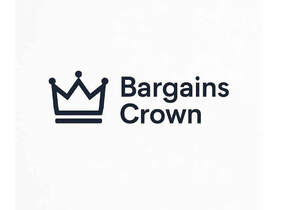

Trade Mark Journal No.2025/049 5 December 2025
UK00004253775 24 August 2025 (35)

- Class 35
- Retail services connected with the sale of white goods, domestic electrical items, domestic electronic equipment, consumer electrical items, consumer electronic equipment, leather goods, textiles, gifts, gift sets, souvenirs, novelty items, collectibles, novelties, school supplies, goods for health and beauty, goods for personal care, goods for cleaning purposes, goods for household use, goods for garden use, goods for pet care, goods for offices, goods for DIY, food and drink and other goods for human consumption or for making goods for human consumption, goods for wear, goods for protection purposes, goods for vehicles, household goods, kitchen goods, office supplies, goods for capturing, reproducing or manipulating images or sound, goods for pets, goods for entertainment purposes, chemical products for vehicles, additives for oils, lubricants and for fuels, preparations for repairing leaks in silencers and exhaust pipes of internal combustion engines, compositions for treating petrol to prevent pinking, chemical preparations for addition to the water of internal combustion engines to inhibit corrosion, de-icing preparations, anti-freeze, battery fluids, repairing compositions for sealing tyres, water softening preparations, artificial sweeteners, plant foods, chemical products for garden, horticultural, forestry and agricultural use, peat, compost, manure, fertilisers, photographic chemicals and photographic film, general purpose adhesives for mending broken articles, chemical preparations for melting snow and ice, distilled water, dry ice, fabric protectant for clothing, textiles, carpets, flower preservatives, wallpaper paste, potting soil, automobile tyre inflator sealers, water purifying chemicals for swimming pools, food colorants, anti-rust oils, paints, varnishes, lacquers, preservatives against rust and against deterioration of wood, dyestuffs, paint primer, paint sealers, paint thinner, photocopier toner, glaziers' putty, wood stains turpentine, wallpaper removing preparations, bleaching preparations and other substances for laundry use, cleaning, polishing, scouring and abrasive preparations, soaps, toilet preparations, perfumery, essential oils, cosmetics, hair lotions, hair care preparations, dentifrices, cotton puffs for cosmetic purposes, cotton swabs for personal use, incense, nail grooming products, sun block and sun screening preparations, pre-moistened cosmetic tissues, greases, lubricants, fire lighters, candles, oils, additives for oils, tapers, night lights, wicks, motor oil, motor fuel, coal, charcoal briquettes, fuel for barbecue cooking apparatus, carnauba wax, fireplace logs, firewood, kerosene, lamp oil, transmission fluid, wood chips for use as fuel, pharmaceutical, veterinary and sanitary preparations, dietetic substances, food for babies, plasters, materials for dressing, material for stopping teeth, dental wax, disinfectants, preparations for destroying vermin, fungicides, herbicides, vitamins and nutritional supplements, deodorizers and air fresheners, weed killers for domestic use, small items of metal hardware, ironmongery, nails, screws, nuts, bolts, hooks, signs of metal, foils, door bells, bicycle storage racks, tool boxes, prefabricated/portable metal buildings, doors, ventilating ducts, fencing, metal hose and pipe fittings, horseshoes, garden hose reels, ladders, mailboxes, metal house numbers, oil cans sold empty, safes, solder, swimming pools, weather vanes, wire, machines and apparatus, all for kitchen, domestic and/or household use, ironing machines, food processors, can openers, electric mixers, air compressors, bits and chucks for power drills, blades for power saws, engraving machines, boat motors, electric glue guns, spray guns for painting, lawn mowers, paper shredding machines, potters' wheels, power blowers for lawn debris, power hand tools, pumps, snow blowers, vacuum cleaners, hand tools and implements, cutlery, forks, spoons, garden tools, razors,manicure and pedicure implements, whetstones and sheathes, batteries, fire extinguishers, smoke detectors, alarms, smoke and anti-theft alarms, electrical fittings for domestic use, electrical cables, mathematical instruments, guards for electric sockets, refrigerator magnets, thermometers, plugs, sun visors, sunglasses, spectacles, electric flat irons, encoded financial, shopping and identification cards, magnetic data carriers, fuses, tyre gauges, booster cables, radio transmitting apparatus, electrical intercommunication apparatus and instruments, sound amplifying apparatus and instruments, sound and/or video recording apparatus, carriers for the reproduction of sound and/or images, gramophone records, compact discs, digital audio cassettes, video tapes, cassette tapes, teaching apparatus and instruments, photographic and cinematographic apparatus and instruments, radios, television receivers, calculators, computers, computer software, electrically operated lighters (non-pyrophoric) for smokers, reflecting discs for wear, water wings, respirators for filtering air, optical apparatus and instruments, measuring apparatus, weighing apparatus, weighing scales and weights and pans therefor, volumetric measuring apparatus, recording apparatus, analytical apparatus, protective helmets, pre-recorded audio tapes, pre-recorded video tapes, pre-recorded audio CDs, pre-recorded video CDs, bar code readers, battery chargers, door bells, binoculars, cameras, contact lenses, eyeglasses and cases therefor, computer parts, computer peripherals and accessories therefor, fire extinguishers, safety goggles, telescopic sights, life preservers, light switches, locks, door openers, radon detectors, life rafts, rheostats, air tanks and regulators for use in scuba diving, voltage surge protectors, whistles, teats, breast pumps, condoms, bandages, massage gloves, support stockings and tights, teething rings, babies feeding apparatus, medical apparatus and instruments and parts and fittings therefor, babies pacifiers, dummies, teethers, soothers, feeding bottles, barbecues, lighting apparatus, lamps, bulbs, cookers, heaters, refrigerators, freezers, fans, coffee makers, kettles, cooking apparatus, heating apparatus, ventilating and air conditioning apparatus, hair dryers, air cleaners, aquarium heaters and lights, whirlpool baths, plumbing fittings, Christmas tree lights, water filtering units, saunas, faucets, flares, flashlights, hot tubs, humidifiers, irrigation systems, swimming pools and fixtures in connection therewith, bicycles, perambulators, pushchairs (baby carriages), wheelchairs, wheelbarrows, trolleys (carriages), parts and fittings for vehicles, anti-theft alarms for vehicles, baby strollers, windshield wiper blades, luggage carriers for vehicles, children's car seats, vehicle seat covers, mechanics creepers, hand trucks, mirrors for vehicles, mud guards for vehicles, oars, paddles, tyre patches, racks for vehicles, rafts, tyre snow chains, snowmobiles, tyre valves, tyres, travel trailers, wagons, automobile windshield sunshades, utility carts, fireworks, jewellery, horological and chronometric instruments, watches and clocks, small domestic utensils of precious metal, precious metals and their alloys and goods in precious metals or coated therewith, precious stones, stringed musical instruments, guitars, electric guitars, percussion instruments, drums, tambourines, cymbals, xylophones, wind instruments, recorders, keyboards, pianos, stationery, printed matter, printed publications, brochures, leaflets, catalogues, calendars, diaries, paper articles, cardboard articles, books, albums, writing instruments, files, ring binders, wrapping paper, Christmas cards, greetings cards, birthday cards, posters, photographs, paper towels, paper handkerchiefs, facial tissues, napkins, paint brushes, office requisites, instructional and teaching materials,toilet paper, checkbook covers, adhesive tape, bags of rubber for packaging, bands of rubber for unscrewing jar lids, shock absorbing buffers of rubber, insulators for cables, canvas hosepipes, connecting hose for vehicle radiators, cords of rubber, cotton wool for packing, draught excluder strips, elastic threads, not for use in textiles, expansion joint fillers, fabrics for insulation, felt, filtering materials, flexible tubes, not of metal, gaskets, glass wool for insulation, flexible tubes, not of metal, insulating gloves, gum, compositions to prevent the radiation of heat, non-conducting materials for retaining heat, watering hose, hoses of textile material, substances for insulating buildings against moisture, insulating materials, metal foil for insulation, pipe jackets, chemical compositions for repairing leaks, plastic film other than for wrapping, adhesive backed sheets of plastics material for lining shelves, rubber stoppers, seals, waterproof packings, weather stripping, plumbing conduit and pipes, pipe fittings, pipe sealant and joint compound, leather and imitations of leather, and goods made of these materials, animal skins, hides, trunks and travelling bags, umbrellas, parasols and walking sticks, whips, harnesses and saddlery, chews for dogs, child harnesses, articles of clothing, collars, leads and harnesses, for pets, articles of luggage, bags, tote bags, backpacks, baby carriers, billfolds, purses, briefcases, business card cases, key cases, passport cases, diaper bags, gym bags, fanny packs, portfolios, school book bags, shopping bags, sunshades being portable, portable sheds, cloches, huts, greenhouses, all being wholly or principally non-metallic, ceramic tiles, artificial stones, paving stones, landscape edging, concrete garden ponds, plaster, cement, non-metallic sealing or filling compositions, non-metallic compositions for use in building repair or for the repair of plaster work, brick work, woodwork, floors and of ceilings, bird baths, mailboxes, fencing, figurines of stone, concrete or marble, gravel, asphalt sealants, furniture, mirrors, picture frames, drinking straws, ornaments made of wood, wax, plaster or of plastics material, sleeping bags, pillows, ladders and barrels, all made of wood or of plastics materials, poles and work benches, all made of wood, baskets, hooks, clips, pegs, coat hangers, cushions, broom handles, containers, L-plates, plate racks, trays, air mattresses, boxes made of wood or plastic, embroidery frames, fire screens, hampers, non-metal house numbers, portable beds for pets, racks, screws, tent pegs, tool boxes and chests, window blinds and shades, small domestic utensils and containers (not of precious metals or coated therewith), combs, sponges, brushes, articles for cleaning purposes, steel wool, glassware, porcelain, earthenware, baby bath tubs, toilet trainers, bakeware, baskets, bird feeders, bread boards, ironing boards, boot trees, brooms, breadboxes, tableware, cookware, trash cans, watering cans, canteens, coasters, ornaments made of china, dustcloths, clothes drying racks, food storage containers, portable coolers, gardening gloves, kitchen tools and utensils, candle snuffers, soap dispensers, spice racks, towel bars and hooks, vacuum bottles, household gloves, pewter figurines, corkscrews, ornaments made of glass, ropes, string, nets, tents, awnings, tarpaulins, sails, sacks and bags, padding and stuffing materials (except of rubber or plastics), raw fibrous textile materials, bungee cords, garment storage bags, laundry bags, mesh bags for storage, plastic ties for home or garden use, yarns and threads, for textile use, textile and textile goods, bed and table covers, household linens, bath mats, clothing, footwear, headgear, lace and embroidery, ribbons and braid, buttons, hooks and eyes, pins and needles, artificial flowers, hair ornaments, household appliance covers, artificial garlands and wreaths, sewing baskets, buckles, clasps, fabric appliqués, hair curlers, toupees, wigs, and hairpieces, carpets, rugs, mats and matting, linoleum and other materials for covering existing floors, wall hangings (non-textile), wallpaper, toys and playthings, Christmas tree decorations, carnival and party products, games, sporting articles, meat, fish, poultry and game, meat extracts, preserved, dried and cooked fruits and vegetables, jellies, jams, fruit sauces, eggs, milk and milk products, edible oils and fats, processed nuts, coffee, tea, cocoa, sugar, rice, tapioca, sago, artificial coffee, flour and preparations made from cereals, bread, pastry and confectionery, ices, honey, treacle, yeast, baking-powder, salt, mustard, vinegar, sauces (condiments), spices, ice, breakfast cereals, chewing gum, cheese flavoured puffed corn snacks, popped popcorn, tortilla chips, corn chips, corn meal, syrups, frozen meals, ice cream, ice milk, frozen yogurt, pasta, pretzels, relishes, salad dressings, marinades, agricultural, horticultural and forestry products and grains, live animals, fresh fruits and vegetables, seeds, natural plants and flowers, foodstuffs for animals, malt, beers, minerals and aerated waters and other non-alcoholic drinks, fruit drinks and fruit juices, syrups and other preparations for making beverages, alcoholic beverages (except beers), cigarettes, cigars, tobacco, smokers' articles, matches; none of the aforesaid goods being or including cutters, circle cutters, knives, blades or polishing tools.
Nadia Qamar